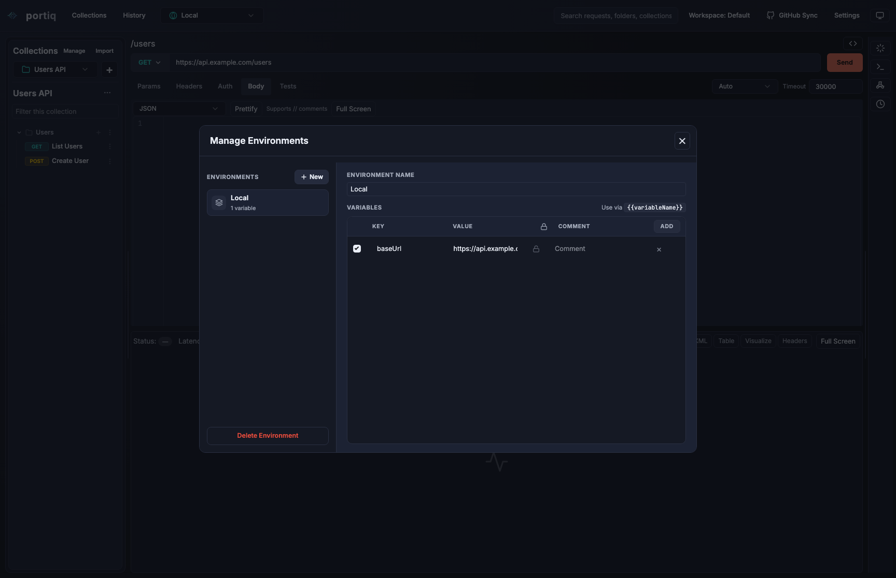
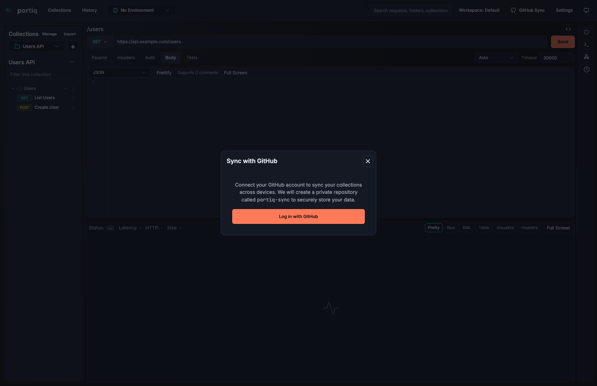

Desktop API Client
One clean desktop workspace for modern API development.
Portiq keeps request building, response inspection, environments, GraphQL, WebSocket, mock workflows, test suites, response visualization, and AI assistance in one focused app.
HTTP, GraphQL, WebSocket, SSE, DAG, MCP
Paste cURL to build a request instantly
Test suites and response visualization
AI support where it helps

Features
Everything your API workflow needs in one desktop app.
Portiq is built to keep request authoring, testing, debugging, and exploration together instead of scattering them across disconnected tools.
Request authoring
Build requests quickly with structured auth, headers, params, bodies, environments, and saved collections.
Paste cURL to build
Drop a cURL command into the URL bar and preview the parsed method, URL, params, headers, body, and auth before it fills the current request. Undefined {{variables}} and matching literals can be parameterized on import.
Protocol coverage
Switch between REST, GraphQL, WebSocket, SSE, mock servers, DAG flows, and MCP from one app.
Response visibility
Inspect JSON, raw text, XML, tables, headers, and fullscreen views without changing tools.
Test suites
Organize assertions into grouped test suites under a dedicated Tests tab, with named pre- and post-request script steps to prepare and verify each call.
Response visualization
Turn response data into SVG visualizations from a dedicated Visualize tab to spot shape and trends without leaving the app.
Environment control
Keep local, staging, and production variables organized with interpolation across request fields, then update values inline from the request when you need a quick change.
AI assistance
Generate requests, tests, and guided debugging help while staying in the same workspace.
GitHub sync
Share collections and work more collaboratively when you are ready to move beyond solo usage.
Why It Works
A complete workflow, not just a request sender.
Portiq is meant for developers who need more than a basic API client. You can build and organize requests, switch protocols, inspect responses visually, manage environments, and use AI assistance without breaking flow.
Build across multiple API styles
Create HTTP, GraphQL, WebSocket, SSE, mock-server, DAG-flow, and MCP workflows from one interface instead of maintaining different tools for each protocol. Already have a cURL command? Paste it into the URL bar and Portiq fills the request for you.
Debug with better visibility
Move between pretty, raw, XML, table, headers, and fullscreen response views, or switch to the Visualize tab to render response data as SVG charts so it is easier to inspect the exact shape of returned data.
Test as part of the request flow
Group assertions into test suites and attach named pre- and post-request script steps, so validating a response happens right next to the request instead of in a separate tool.
Work faster with environments and collections
Keep requests reusable, group them in collections, and switch between local, staging, and production setups with variable interpolation. You can also double-click an environment variable inside the request flow and edit its value directly instead of being pushed into the full environment management screen.
Use AI without leaving the workflow
Ask for request help, generation ideas, test suggestions, and debugging assistance while staying inside the same desktop workspace.
Screens
See Portiq across real workflows.
A quick tour of Portiq across the workflows you'll actually use — from request building to GraphQL, WebSocket, and AI assistance.
Main workspace
Keep request editing, collections, and response inspection within one wide desktop view.

GraphQL
Dedicated query workflow with schema-aware support.

WebSocket
Live message workflows without leaving the app.

DAG flow
Visual multi-step request workflows for more advanced API sequences.

AI assistant
Keep suggestions, generated help, and debugging guidance close to the active request.

Environments
Switch variables cleanly between local, staging, and production setups, with direct inline edits from the request workflow.

GitHub sync
Share collections and coordinate work more easily with repository-backed sync.
Changelog
What's new in Portiq.
A short history of recent releases. See the full release notes on GitHub.
-
Typography refresh, fast search & per-request panes
- New app typography — Inter for the UI and JetBrains Mono for code and values, tuned for the app's dense 11–13px scale.
- Dedicated request search: a top-bar suggestions dropdown, plus a sidebar filter that expands, scrolls to, and highlights matching requests across collections.
- Per-request pane layout — request/response and tools pane sizes are saved per request and restored when you switch back.
- System-following theme option, with accessibility and light-theme contrast fixes.
-
macOS launch fix and AGPL-3.0
- macOS builds are now ad-hoc signed (hardened runtime + entitlements) so arm64 downloads launch instead of showing a "damaged" error. Builds are not notarized, so the first launch is via right-click → Open.
- Relicensed the project from MIT to AGPL-3.0.
- Bumped release GitHub Actions to v5 for the Node 24 runtime.
-
cURL paste import, tests & visualize
- Paste a cURL command into the URL bar to build the current request, with a confirmation dialog that previews the parsed method, URL, params, headers, body, and auth, and can fill or parameterize
{{variables}}on import. - New Tests tab with grouped test suites, plus named pre- and post-request script steps.
- New Visualize tab that renders SVG visualizations from response data.
- More compact request toolbar.
- Paste a cURL command into the URL bar to build the current request, with a confirmation dialog that previews the parsed method, URL, params, headers, body, and auth, and can fill or parameterize
-
Redesigned request panel and full theming
- Refreshed request/response layout with consistent light and dark theming across the app.
- Faster DAG editor — the graph is no longer rewritten on every drag frame, and nodes are memoized for smoother panning.
- Platform upgrades: React 19, Electron 41, Vite 8, and TypeScript 6.
-
Reworked DAG flow
- Redesigned the DAG flow with a reference-first data model on a react-flow canvas, with editing and execution controls for building and running request graphs.
- Variable-aware secret masking and desktop build scripting.
-
The Portiq rebrand
- Rebranded the application from Commu to Portiq.
- Fixed GitHub OAuth login in packaged production builds and unified cross-environment requests behind a shared safeFetch utility.
-
GitHub sync and environments
- Added GitHub Sync to back up and restore collections and environments, with support for secret environment variables.
- Inline environment-variable editing and persistent layout and workspace-state caching across restarts.
Download
Download the packaged release directly.
Grab the build for your platform. Each download links straight to the latest signed GitHub release (v0.6.2) — clicking starts it immediately.
macOS Apple Silicon
Direct DMG download for arm64 builds.
Windows x64
Direct installer download for the Windows packaged build.
Linux x86_64
Direct AppImage download for Linux users who want a portable build.